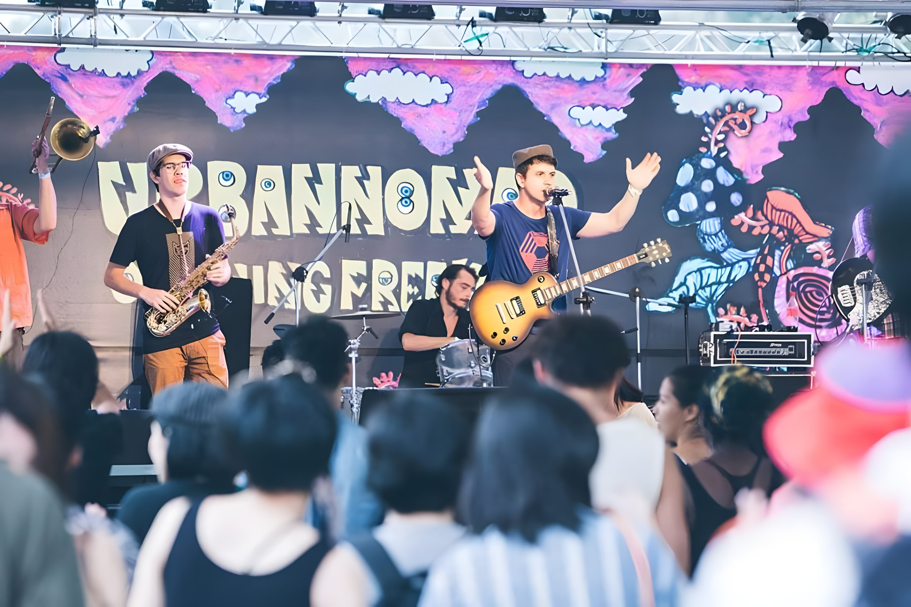

2017
April 15 · Tiger Mountain
Balkazar performed on the main stage. Taipei Times listed the band and its 4 pm slot.
Balkazar live history
Three documented festival lineups: 2017, 2019 and 2020.
Past appearances
Dated appearances, organizer listings, music journalism and footage from our own archive.
← All festivals
Balkazar performed on the main stage. Taipei Times listed the band and its 4 pm slot.
The festival organizer's KKTIX lineup names Balkazar for Saturday.

Back for the Fall Freakout event; both Balkazar and Skaraoke appear in the official lineup.
From the archive
Urban Nomad archive. Photos from the band's existing collection; undated images aren't assigned a specific year.
Want Balkazar at your event? Get in touch ↗